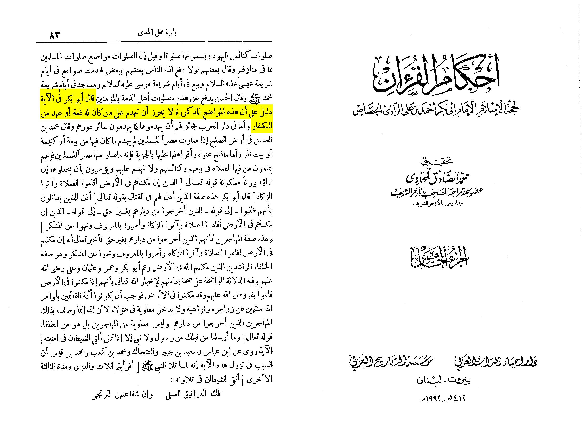

Anyone who has dhima we can’t destroy there temples according to tafsir al-jasas 22:40 temples the correct view dhima is taken from every kaffir.
Also
Moreover, Khalid ibn Al-Walid, in his covenant with the People of `Anat, stated, “They are allowed to ring the bells at any time of the day or night, except in the time of the Islamic prayer times. They are allowed to bear their crosses in their festivals.” (Abu Yusuf, Al-Kharaj, p. 146)
Read More on islamonline :
https://fiqh.islamonline.net/en/building-places-of-worship-of-the-non-muslims-in-muslim-countries/

In Ahkam Al-Dhimyin it presents the 4 madhahab position that it is permissible for them to build churches and cynagoges in their land. The scholars only forbade them from building in the land of Muslims.